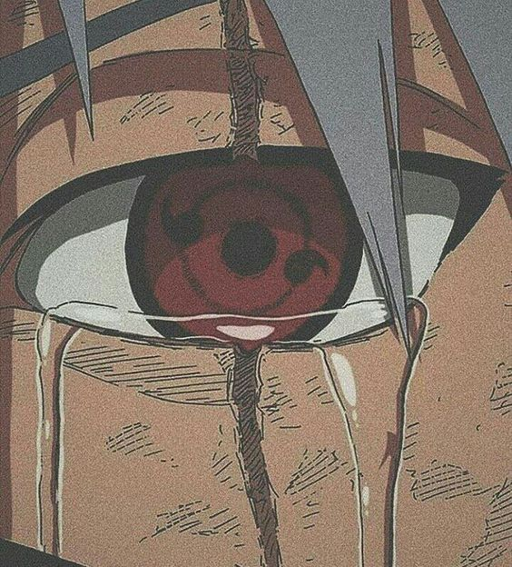

Somos un equipo apasionado y comprometido que trabaja en conjunto para hacer de Amaterasu la página web de referencia en el fascinante mundo de las pinturas japonesas. Nuestra misión es promover y difundir el arte japonés, permitiendo a los visitantes explorar y sumergirse en la rica tradición artística de Japón.
En Amaterasu, creemos en la importancia de presentar una experiencia en línea enriquecedora y envolvente. Nuestro equipo multidisciplinario incluye diseñadores web talentosos, expertos en arte japonés, investigadores meticulosos y apasionados redactores. Trabajamos de la mano para asegurarnos de que cada aspecto de Amaterasu refleje la belleza y el espíritu de las pinturas japonesas.
